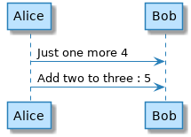

4. Standardising Standard Library¶
4.1. Defines Are Deprecated¶
Existing stdlib icon libraries use !define and !definelong to create different macros.
Tip
!function and !procedure should be used instead of !define and !definelong
Per MigrationNotes_:
You should not use !define and !definelong anymore. Use !function, !procedure or variable definition instead.
!define should be replaced by return !function
!definelong should be replaced by !procedure.
4.2. Default Values¶
Per DefaultArgumentValue_, “In both procedure and return functions, you can define default values for arguments”
Tip
The default argument value can help to simplify definitions

Using default argument¶
1 2 3 4 5 6 7 8 | @startuml
!function $inc($value, $step=1)
!return $value + $step
!endfunction
Alice -> Bob : Just one more $inc(3)
Alice -> Bob : Add two to three : $inc(3, 2)
@enduml
|
Note
There is also dynamic invocation which may be useful. I think of this as like C function pointers which are very useful.
4.3. Step-by-step Towards A Standard Macro¶
![@startuml
'create equivalent of icons shown here https://github.com/awslabs/aws-icons-for-plantuml
sprite $Batch [64x64/16z] {
xLQ7bjim30CdzFzVtEV1iErPkJpT7iYm5aWDKERujFZ5Bp8YkSvM011VfMzSDy2Mw1JidbCGAtmllmbPuIkoImjyGUsyBV4LV95_Xny50bpW4uTRAjOKu81b
Xa0vbX3OKFG5C0IMNLyxXA_3PvW5hqHSOFBP_Ovk4036hYi0pJdTCgqD6A0g4FQ0hOwygxSikGOanw11AuvtomxXjNiRDECmn21xxTkJP0N4tdy1Gmu5T2GW
6ygFL_sqbx3NvA_FVtt_ri_F1CZNra-10TpNhvVr2KGcyVCOdoBySlpv-jC1ZSVveO36_Fwb0UASqGqG0QpfJgP2Eo60u59-fLVozhhdNk2WTeDpq2O6AAL_
uV7KGPNO2lya17gz1pMiD1VmFNH9IBLNe3xA3q07eNsMy_WdXESwU4jRmddEk-FUuPFjjthiqAEGVUz8rlqmsK1nhtYlklvp7vWRfka0jUNITUdTzgxFyzLx
-Ikh_YdmYr_y0G
}
rectangle "<color:red><$Batch></color>\n0" as rectangle
'Render a sprite
!procedure $ffoo1()
rectangle "<$Batch>\n1"
!endprocedure
$ffoo1()
'Render a sprite - with color red
!procedure $ffoo2()
rectangle "<color:red><$Batch></color>\n2" as 2
!endprocedure
$ffoo2()
'https://github.com/awslabs/aws-icons-for-plantuml/blob/master/dist/General/Disk.puml
'rectangle "==e_label\n<color:e_color><$e_sprite></color>\n//<size:TECHN_FONT_SIZE>[e_techn]</size>//" <<e_stereo>> as e_alias
'!define DiskParticipant(p_alias, p_label, p_techn, p_descr) AWSParticipant(p_alias, p_label, p_techn, p_descr, #232F3E, Disk, Disk)
'https://github.com/awslabs/aws-icons-for-plantuml/blob/master/source/AWSCommon.puml
'common.puml: rectangle "==e_label\n<color:e_color><$e_sprite></color>\n//<size:TECHN_FONT_SIZE>[e_techn]</size>//\n\n e_descr" <<e_stereo>> as e_alias
'Render a sprite - with color red - and add some text
!procedure $ffoo3()
rectangle "==label\n<color:red><$Batch></color>\n[technology]\n\n Description 3" as 3
!endprocedure
$ffoo3()
'Render a sprite - with color red - and add some text - with some formatting
!procedure $ffoo4()
rectangle "<<something>>\n==label\n<color:red><$Batch></color>\n//<size:12>[technology]</size>//\n\n Description 4" as 4
!endprocedure
$ffoo4()
'!procedure $ffoo5($alias, $description="", $label="", $technology="", $scale=1, $colour=red)
'OBSERVATION 1: the next line does not work - sprite is white - not red; there is where the unquoted keyword comes in
'rectangle "<<$alias>>\n==$label\n<color:$colour><$Batch*$scale></color>\n//<size:12>[$technology]</size>//\n\n $description 5" as 5
'the next line works i.e. sprite is red
'rectangle "<<//$alias//>>\n==$label\n"<color:red><$Batch*$scale></color>"\n//<size:12>[$technology]</size>//\n\n $description 5" as $alias
'!endprocedure
'$ffoo5("myalias", "mydescription", "mylabel", "mytechnology", 2, blue)
'unquoted means that you don't have to use quotes when calling the procedure
!unquoted procedure $ffoo51($alias, $description="", $label="", $technology="", $scale=1, $colour=red)
rectangle "<<$alias>>\n==$label\n<color:$colour><$Batch*$scale></color>\n//<size:12>[$technology]</size>//\n\n $description 51" as 5
!endprocedure
$ffoo51(myalias, mydescription, mylabel, mytechnology, 2, blue)
!procedure $ffoo6($alias, $description="", $label="", $technology="", $scale=1, $colour=red)
rectangle "<<//$alias//>>\n==$label\n<color:red><$Batch*$scale></color>\n//<size:12>[$technology]</size>//\n\n $description 6 " as $alias
!endprocedure
$ffoo6("myaliasbatch2", "mydescription", "mylabel", "mytechnology", 2, blue)
'OBSERVATION 2: can't do something like this
' $ffoo6($scale=2)
@enduml](../_images/plantuml-8b8311b97c0cdf54ecd3fcf752eb4be4340c384c.png)
each output is numbered to match the procedure e.g. 51 is output for ffoo51()¶
1 2 3 4 5 6 7 8 9 10 11 12 13 14 15 16 17 18 19 20 21 22 23 24 25 26 27 28 29 30 31 32 33 34 35 36 37 38 39 40 41 42 43 44 45 46 47 48 49 50 51 52 53 54 55 56 57 58 59 60 61 62 63 64 65 66 67 68 69 70 71 72 73 74 75 76 77 78 79 80 81 82 83 84 85 86 87 88 | @startuml
'create equivalent of icons shown here https://github.com/awslabs/aws-icons-for-plantuml
sprite $Batch [64x64/16z] {
xLQ7bjim30CdzFzVtEV1iErPkJpT7iYm5aWDKERujFZ5Bp8YkSvM011VfMzSDy2Mw1JidbCGAtmllmbPuIkoImjyGUsyBV4LV95_Xny50bpW4uTRAjOKu81b
Xa0vbX3OKFG5C0IMNLyxXA_3PvW5hqHSOFBP_Ovk4036hYi0pJdTCgqD6A0g4FQ0hOwygxSikGOanw11AuvtomxXjNiRDECmn21xxTkJP0N4tdy1Gmu5T2GW
6ygFL_sqbx3NvA_FVtt_ri_F1CZNra-10TpNhvVr2KGcyVCOdoBySlpv-jC1ZSVveO36_Fwb0UASqGqG0QpfJgP2Eo60u59-fLVozhhdNk2WTeDpq2O6AAL_
uV7KGPNO2lya17gz1pMiD1VmFNH9IBLNe3xA3q07eNsMy_WdXESwU4jRmddEk-FUuPFjjthiqAEGVUz8rlqmsK1nhtYlklvp7vWRfka0jUNITUdTzgxFyzLx
-Ikh_YdmYr_y0G
}
rectangle "<color:red><$Batch></color>\n0" as rectangle
'Render a sprite
!procedure $ffoo1()
rectangle "<$Batch>\n1"
!endprocedure
$ffoo1()
'Render a sprite - with color red
!procedure $ffoo2()
rectangle "<color:red><$Batch></color>\n2" as 2
!endprocedure
$ffoo2()
'https://github.com/awslabs/aws-icons-for-plantuml/blob/master/dist/General/Disk.puml
'rectangle "==e_label\n<color:e_color><$e_sprite></color>\n//<size:TECHN_FONT_SIZE>[e_techn]</size>//" <<e_stereo>> as e_alias
'!define DiskParticipant(p_alias, p_label, p_techn, p_descr) AWSParticipant(p_alias, p_label, p_techn, p_descr, #232F3E, Disk, Disk)
'https://github.com/awslabs/aws-icons-for-plantuml/blob/master/source/AWSCommon.puml
'common.puml: rectangle "==e_label\n<color:e_color><$e_sprite></color>\n//<size:TECHN_FONT_SIZE>[e_techn]</size>//\n\n e_descr" <<e_stereo>> as e_alias
'Render a sprite - with color red - and add some text
!procedure $ffoo3()
rectangle "==label\n<color:red><$Batch></color>\n[technology]\n\n Description 3" as 3
!endprocedure
$ffoo3()
'Render a sprite - with color red - and add some text - with some formatting
!procedure $ffoo4()
rectangle "<<something>>\n==label\n<color:red><$Batch></color>\n//<size:12>[technology]</size>//\n\n Description 4" as 4
!endprocedure
$ffoo4()
'!procedure $ffoo5($alias, $description="", $label="", $technology="", $scale=1, $colour=red)
'OBSERVATION 1: the next line does not work - sprite is white - not red; there is where the unquoted keyword comes in
'rectangle "<<$alias>>\n==$label\n<color:$colour><$Batch*$scale></color>\n//<size:12>[$technology]</size>//\n\n $description 5" as 5
'the next line works i.e. sprite is red
'rectangle "<<//$alias//>>\n==$label\n"<color:red><$Batch*$scale></color>"\n//<size:12>[$technology]</size>//\n\n $description 5" as $alias
'!endprocedure
'$ffoo5("myalias", "mydescription", "mylabel", "mytechnology", 2, blue)
'unquoted means that you don't have to use quotes when calling the procedure
!unquoted procedure $ffoo51($alias, $description="", $label="", $technology="", $scale=1, $colour=red)
rectangle "<<$alias>>\n==$label\n<color:$colour><$Batch*$scale></color>\n//<size:12>[$technology]</size>//\n\n $description 51" as 5
!endprocedure
$ffoo51(myalias, mydescription, mylabel, mytechnology, 2, blue)
!procedure $ffoo6($alias, $description="", $label="", $technology="", $scale=1, $colour=red)
rectangle "<<//$alias//>>\n==$label\n<color:red><$Batch*$scale></color>\n//<size:12>[$technology]</size>//\n\n $description 6 " as $alias
!endprocedure
$ffoo6("myaliasbatch2", "mydescription", "mylabel", "mytechnology", 2, blue)
'OBSERVATION 2: can't do something like this
' $ffoo6($scale=2)
@enduml
|
4.4. Close But…¶
We can use the DefaultArgumentValue_ to avoid having to specify a parameter value when we call our procedure. BUT this only works if the default parameters are at the end i.e. it is all based on the order of the procedure parameters.
In other words, the user has to know/care about the order of parameters.
Todo
add ref to reqs
To specify color blue I need to do
`$ffoo6("myaliasbatch2", "mydescription", "mylabel", "mytechnology", 2, blue)`
What I want to do
`$ffoo6($color=blue)`
or
`$ffoo6($scale=2)`
4.5. Procedure Keyword Arguments¶
To enable the StdLib standardisation, I suggested the keyword arguments and Arnaud produced a release to play with next day - and this became part of an official release:
https://plantuml.com/news 17 May, 2020: Use keyword arguments with the preprocessor (V1.2020.10). (Thanks to Crashedmind for the suggestion !)
See PlantUML Stdlib Under The Hood for more info.
Todo
add example code